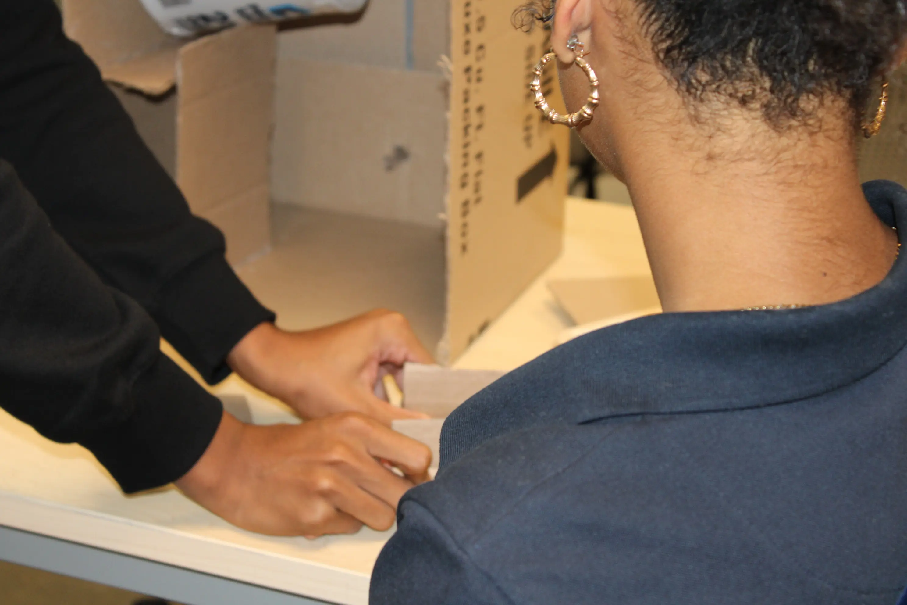
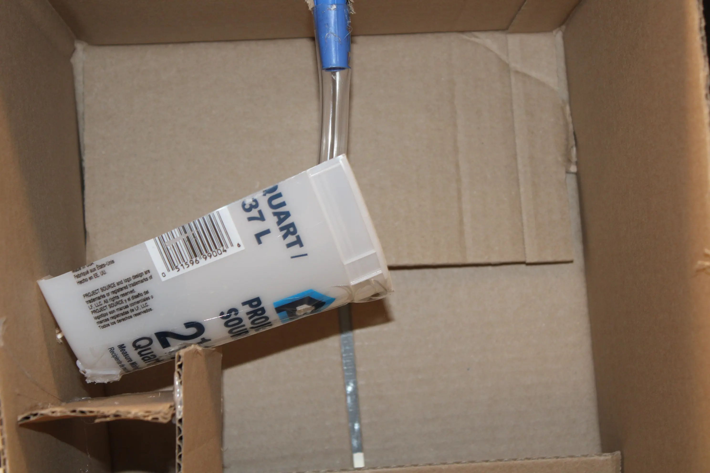

In the Blackbox Investigation, I worked with my group to analyze data from inside a special box and make a claim about what was in it. This special box was a box that transferred water from the input source to the output source, but it did not transfer the same amount of water at any time. In this project, I learned how to use evidence to create a model based on my own scientific conclusions of what was inside the box, even though they were not perfect. There were two main parts to the project: the digital part and the hands-on part. In digital photography and design, I learned basic techniques for creating animations, and also how 3D modeling, rendering, rigging, and camera work are used to create digital scenes. On the hands-on part of the project I built a working model of what I thought the actualy blackbox would look like. By doing this, I honed important skills like how to work productively with a team and incorporate all ideas of teamates.
One 21st century skill that I showed mastery of in my Blackbox investigation was "Problem solving and Critical thinking". During the project I had to make calculated decisions on what I thought was inside the mystery blackbox. Furthermore, I made judgements based on my insight at a highly intellectual level. Judgements and decisions such as: the amount of tubes I used in my model, the size of my model, what materials I used to create a working model. All of these decisions were impacted by my skill to reason effectively. The main goal for me in the Blackbox investigation was to solve the problem of "what is inside the Blackbox?" This question guided me throughout all apsects of the project pushing me to find critical thinking skills that I wouldn't have if not for the experience of the Blackbox investigation.


Back to Home Page